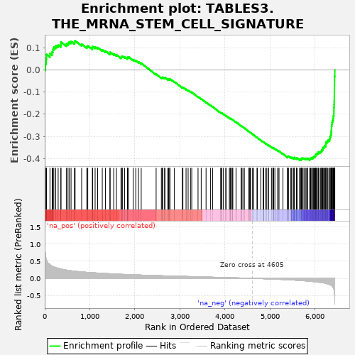

| | | Dataset | al10_v_al5 |
| Phenotype | NoPhenotypeAvailable |
| Upregulated in class | na_neg |
| GeneSet | TABLES3.THE_MRNA_STEM_CELL_SIGNATURE |
| Enrichment Score (ES) | -0.40740088 |
| Normalized Enrichment Score (NES) | -2.2459683 |
| Nominal p-value | 0.0 |
| FDR q-value | 0.0 |
| FWER p-Value | 0.0 |
Table: GSEA Results Summary

Fig 1: Enrichment plot: TABLES3.THE_MRNA_STEM_CELL_SIGNATURE
Profile of the Running ES Score & Positions of GeneSet Members on the Rank Ordered List
| PROBE | GENE SYMBOL | GENE_TITLE | RANK IN GENE LIST | RANK METRIC SCORE | RUNNING ES | CORE ENRICHMENT | | 1 | Cit | | | 16 | 0.737 | 0.0275 | No |
| 2 | Cenpf | | | 33 | 0.559 | 0.0477 | No |
| 3 | Hirip3 | | | 39 | 0.542 | 0.0690 | No |
| 4 | Dtl | | | 116 | 0.409 | 0.0735 | No |
| 5 | Sdc4 | | | 165 | 0.353 | 0.0802 | No |
| 6 | Fads1 | | | 181 | 0.346 | 0.0919 | No |
| 7 | Cep192 | | | 202 | 0.335 | 0.1024 | No |
| 8 | Nap1l1 | | | 244 | 0.317 | 0.1088 | No |
| 9 | Spag5 | | | 298 | 0.295 | 0.1123 | No |
| 10 | Aspm | | | 359 | 0.276 | 0.1140 | No |
| 11 | Ckap2 | | | 360 | 0.275 | 0.1252 | No |
| 12 | Aqp4 | | | 479 | 0.243 | 0.1162 | No |
| 13 | Pole | | | 516 | 0.235 | 0.1200 | No |
| 14 | Palb2 | | | 542 | 0.230 | 0.1254 | No |
| 15 | Haus4 | | | 584 | 0.222 | 0.1279 | No |
| 16 | Espl1 | | | 657 | 0.209 | 0.1249 | No |
| 17 | AU020206 | | | 674 | 0.207 | 0.1307 | No |
| 18 | Isyna1 | | | 819 | 0.188 | 0.1153 | No |
| 19 | Brca2 | | | 934 | 0.177 | 0.1043 | No |
| 20 | Trim37 | | | 955 | 0.175 | 0.1082 | No |
| 21 | Cnn3 | | | 1058 | 0.166 | 0.0986 | No |
| 22 | Pold1 | | | 1062 | 0.165 | 0.1049 | No |
| 23 | Psrc1 | | | 1118 | 0.159 | 0.1026 | No |
| 24 | Nfic | | | 1174 | 0.155 | 0.1001 | No |
| 25 | Ccdc18 | | | 1277 | 0.147 | 0.0897 | No |
| 26 | Pck2 | | | 1348 | 0.142 | 0.0843 | No |
| 27 | Mfge8 | | | 1447 | 0.134 | 0.0741 | No |
| 28 | Txndc16 | | | 1451 | 0.134 | 0.0791 | No |
| 29 | Tiam1 | | | 1530 | 0.129 | 0.0718 | No |
| 30 | H2-Aa | | | 1592 | 0.125 | 0.0671 | No |
| 31 | Wdr90 | | | 1692 | 0.119 | 0.0561 | No |
| 32 | Mif | | | 1704 | 0.118 | 0.0592 | No |
| 33 | Ifitm3 | | | 1723 | 0.117 | 0.0611 | No |
| 34 | Tmem209 | | | 1773 | 0.114 | 0.0579 | No |
| 35 | Cdo1 | | | 1834 | 0.111 | 0.0528 | No |
| 36 | Kif20a | | | 1838 | 0.110 | 0.0568 | No |
| 37 | Ifitm2 | | | 1858 | 0.110 | 0.0582 | No |
| 38 | Cd320 | | | 1962 | 0.104 | 0.0460 | No |
| 39 | Paics | | | 2020 | 0.102 | 0.0410 | No |
| 40 | Tbc1d4 | | | 2080 | 0.099 | 0.0356 | No |
| 41 | Kcnq1 | | | 2141 | 0.095 | 0.0298 | No |
| 42 | Pde3b | | | 2472 | 0.081 | -0.0197 | No |
| 43 | Ilf3 | | | 2588 | 0.076 | -0.0350 | No |
| 44 | Arl4c | | | 2610 | 0.075 | -0.0353 | No |
| 45 | Ppat | | | 2619 | 0.075 | -0.0335 | No |
| 46 | Eri2 | | | 2659 | 0.073 | -0.0368 | No |
| 47 | Dapk2 | | | 2667 | 0.073 | -0.0349 | No |
| 48 | Immp2l | | | 2731 | 0.070 | -0.0422 | No |
| 49 | Spice1 | | | 2750 | 0.070 | -0.0422 | No |
| 50 | Zmym1 | | | 2772 | 0.069 | -0.0428 | No |
| 51 | Mpzl1 | | | 2778 | 0.069 | -0.0408 | No |
| 52 | Atr | | | 2877 | 0.064 | -0.0538 | No |
| 53 | Plce1 | | | 3053 | 0.058 | -0.0795 | No |
| 54 | Nfia | | | 3066 | 0.058 | -0.0790 | No |
| 55 | Prelp | | | 3136 | 0.056 | -0.0878 | No |
| 56 | Kcne3 | | | 3182 | 0.054 | -0.0928 | No |
| 57 | Cdca7l | | | 3235 | 0.052 | -0.0990 | No |
| 58 | Fam92a | | | 3262 | 0.051 | -0.1011 | No |
| 59 | Nrtn | | | 3402 | 0.046 | -0.1215 | No |
| 60 | Poglut1 | | | 3472 | 0.043 | -0.1308 | No |
| 61 | Qsox2 | | | 3580 | 0.039 | -0.1464 | No |
| 62 | Evl | | | 3677 | 0.035 | -0.1603 | No |
| 63 | Tnfsf10 | | | 3727 | 0.033 | -0.1668 | No |
| 64 | Napepld | | | 3906 | 0.027 | -0.1942 | No |
| 65 | Pds5b | | | 3911 | 0.027 | -0.1937 | No |
| 66 | Notch1 | | | 3927 | 0.027 | -0.1950 | No |
| 67 | Ascl2 | | | 3961 | 0.026 | -0.1993 | No |
| 68 | H2-Eb1 | | | 4016 | 0.023 | -0.2070 | No |
| 69 | Ung | | | 4024 | 0.023 | -0.2071 | No |
| 70 | Impdh2 | | | 4097 | 0.020 | -0.2179 | No |
| 71 | Phlpp1 | | | 4114 | 0.019 | -0.2196 | No |
| 72 | Grb7 | | | 4124 | 0.019 | -0.2203 | No |
| 73 | Bcl7a | | | 4139 | 0.019 | -0.2218 | No |
| 74 | Lancl1 | | | 4163 | 0.017 | -0.2248 | No |
| 75 | Sycn | | | 4174 | 0.017 | -0.2257 | No |
| 76 | Trim44 | | | 4245 | 0.014 | -0.2363 | No |
| 77 | Irf2bp2 | | | 4246 | 0.014 | -0.2357 | No |
| 78 | Dctd | | | 4358 | 0.010 | -0.2531 | No |
| 79 | Efna4 | | | 4361 | 0.009 | -0.2530 | No |
| 80 | Slc27a2 | | | 4365 | 0.009 | -0.2532 | No |
| 81 | Kank1 | | | 4397 | 0.008 | -0.2578 | No |
| 82 | Sestd1 | | | 4430 | 0.006 | -0.2627 | No |
| 83 | Csnk1e | | | 4529 | 0.003 | -0.2782 | No |
| 84 | Lrig1 | | | 4532 | 0.003 | -0.2785 | No |
| 85 | Lipt2 | | | 4548 | 0.002 | -0.2808 | No |
| 86 | Zfp318 | | | 4559 | 0.002 | -0.2823 | No |
| 87 | Cbx6 | | | 4569 | 0.001 | -0.2837 | No |
| 88 | Psd3 | | | 4611 | -0.000 | -0.2902 | No |
| 89 | Alms1 | | | 4637 | -0.002 | -0.2942 | No |
| 90 | Myc | | | 4710 | -0.004 | -0.3055 | No |
| 91 | Nr2e3 | | | 4719 | -0.005 | -0.3066 | No |
| 92 | Gpld1 | | | 4793 | -0.008 | -0.3180 | No |
| 93 | Fzd7 | | | 4849 | -0.011 | -0.3263 | No |
| 94 | Agr3 | | | 4853 | -0.012 | -0.3263 | No |
| 95 | Arhgap39 | | | 4858 | -0.012 | -0.3265 | No |
| 96 | Dtx4 | | | 4859 | -0.012 | -0.3260 | No |
| 97 | Glrx | | | 4901 | -0.014 | -0.3320 | No |
| 98 | Sox9 | | | 4928 | -0.015 | -0.3355 | No |
| 99 | Slc19a2 | | | 4967 | -0.017 | -0.3409 | No |
| 100 | Csad | | | 4971 | -0.017 | -0.3407 | No |
| 101 | Aqp1 | | | 5031 | -0.021 | -0.3493 | No |
| 102 | Adra2a | | | 5060 | -0.022 | -0.3529 | No |
| 103 | Ces1d | | | 5070 | -0.022 | -0.3534 | No |
| 104 | Lamb3 | | | 5075 | -0.022 | -0.3531 | No |
| 105 | Prps2 | | | 5081 | -0.023 | -0.3530 | No |
| 106 | Sesn3 | | | 5107 | -0.024 | -0.3560 | No |
| 107 | Sema3b | | | 5171 | -0.028 | -0.3650 | No |
| 108 | Clic6 | | | 5177 | -0.029 | -0.3646 | No |
| 109 | Mpzl3 | | | 5199 | -0.030 | -0.3668 | No |
| 110 | Mcc | | | 5286 | -0.034 | -0.3791 | No |
| 111 | Atm | | | 5390 | -0.040 | -0.3940 | No |
| 112 | Nedd4 | | | 5391 | -0.040 | -0.3924 | No |
| 113 | Sord | | | 5393 | -0.040 | -0.3909 | No |
| 114 | Hdac11 | | | 5402 | -0.041 | -0.3905 | No |
| 115 | Sfrp5 | | | 5407 | -0.041 | -0.3894 | No |
| 116 | Maged1 | | | 5456 | -0.045 | -0.3953 | No |
| 117 | Cdca7 | | | 5480 | -0.047 | -0.3971 | No |
| 118 | Tgif1 | | | 5482 | -0.047 | -0.3953 | No |
| 119 | Mdn1 | | | 5527 | -0.050 | -0.4003 | No |
| 120 | Shisa2 | | | 5530 | -0.051 | -0.3986 | No |
| 121 | Zfhx3 | | | 5532 | -0.051 | -0.3966 | No |
| 122 | Sp5 | | | 5539 | -0.051 | -0.3955 | No |
| 123 | Lpar6 | | | 5584 | -0.056 | -0.4003 | No |
| 124 | Dach1 | | | 5587 | -0.056 | -0.3983 | No |
| 125 | Prrc2b | | | 5600 | -0.057 | -0.3979 | No |
| 126 | Engase | | | 5653 | -0.062 | -0.4037 | No |
| 127 | Yap1 | | | 5677 | -0.064 | -0.4048 | Yes |
| 128 | Igfbp4 | | | 5691 | -0.065 | -0.4042 | Yes |
| 129 | Phf20 | | | 5699 | -0.066 | -0.4027 | Yes |
| 130 | Slc14a1 | | | 5701 | -0.066 | -0.4001 | Yes |
| 131 | Etv6 | | | 5708 | -0.067 | -0.3984 | Yes |
| 132 | Rassf4 | | | 5720 | -0.068 | -0.3974 | Yes |
| 133 | Hunk | | | 5752 | -0.072 | -0.3994 | Yes |
| 134 | Hmbox1 | | | 5780 | -0.074 | -0.4007 | Yes |
| 135 | Tnfrsf19 | | | 5800 | -0.077 | -0.4006 | Yes |
| 136 | Car12 | | | 5828 | -0.079 | -0.4017 | Yes |
| 137 | Hmga2 | | | 5832 | -0.079 | -0.3989 | Yes |
| 138 | Acvr2b | | | 5881 | -0.085 | -0.4032 | Yes |
| 139 | Il17rd | | | 5891 | -0.086 | -0.4011 | Yes |
| 140 | Gkap1 | | | 5900 | -0.087 | -0.3988 | Yes |
| 141 | Sorcs2 | | | 5912 | -0.089 | -0.3969 | Yes |
| 142 | Pbx1 | | | 5944 | -0.094 | -0.3981 | Yes |
| 143 | Bcl2 | | | 5954 | -0.095 | -0.3956 | Yes |
| 144 | Pla2g4a | | | 5960 | -0.096 | -0.3925 | Yes |
| 145 | Slco3a1 | | | 5980 | -0.099 | -0.3915 | Yes |
| 146 | Mlxip | | | 5996 | -0.102 | -0.3897 | Yes |
| 147 | Smoc2 | | | 6006 | -0.103 | -0.3870 | Yes |
| 148 | Ppp1r9a | | | 6012 | -0.104 | -0.3836 | Yes |
| 149 | Iffo2 | | | 6023 | -0.105 | -0.3809 | Yes |
| 150 | Zfp553 | | | 6029 | -0.106 | -0.3774 | Yes |
| 151 | Snx10 | | | 6052 | -0.111 | -0.3764 | Yes |
| 152 | Picalm | | | 6073 | -0.114 | -0.3749 | Yes |
| 153 | App | | | 6074 | -0.114 | -0.3703 | Yes |
| 154 | Nrn1 | | | 6109 | -0.119 | -0.3709 | Yes |
| 155 | Sema7a | | | 6125 | -0.122 | -0.3683 | Yes |
| 156 | Ehf | | | 6141 | -0.125 | -0.3656 | Yes |
| 157 | Farp1 | | | 6148 | -0.126 | -0.3614 | Yes |
| 158 | Limk2 | | | 6167 | -0.130 | -0.3589 | Yes |
| 159 | Zfp704 | | | 6168 | -0.130 | -0.3536 | Yes |
| 160 | Blnk | | | 6179 | -0.132 | -0.3499 | Yes |
| 161 | Wwp1 | | | 6199 | -0.135 | -0.3474 | Yes |
| 162 | Cachd1 | | | 6210 | -0.138 | -0.3433 | Yes |
| 163 | Acot1 | | | 6235 | -0.147 | -0.3412 | Yes |
| 164 | Stk39 | | | 6237 | -0.148 | -0.3353 | Yes |
| 165 | Tubb2b | | | 6241 | -0.149 | -0.3297 | Yes |
| 166 | Zfp397 | | | 6247 | -0.151 | -0.3244 | Yes |
| 167 | Tifa | | | 6276 | -0.163 | -0.3222 | Yes |
| 168 | Gas6 | | | 6285 | -0.166 | -0.3167 | Yes |
| 169 | Trim24 | | | 6320 | -0.185 | -0.3146 | Yes |
| 170 | Cd44 | | | 6326 | -0.186 | -0.3078 | Yes |
| 171 | Mecom | | | 6331 | -0.188 | -0.3008 | Yes |
| 172 | Zbtb38 | | | 6348 | -0.197 | -0.2954 | Yes |
| 173 | Cttnbp2 | | | 6353 | -0.207 | -0.2875 | Yes |
| 174 | Smo | | | 6358 | -0.213 | -0.2795 | Yes |
| 175 | Vdr | | | 6361 | -0.215 | -0.2710 | Yes |
| 176 | Myo1b | | | 6364 | -0.216 | -0.2625 | Yes |
| 177 | Tns3 | | | 6365 | -0.217 | -0.2537 | Yes |
| 178 | Zfp292 | | | 6372 | -0.221 | -0.2456 | Yes |
| 179 | Sox4 | | | 6376 | -0.225 | -0.2369 | Yes |
| 180 | Axin2 | | | 6385 | -0.244 | -0.2283 | Yes |
| 181 | Nav1 | | | 6401 | -0.280 | -0.2193 | Yes |
| 182 | Rgmb | | | 6404 | -0.285 | -0.2080 | Yes |
| 183 | Msi1 | | | 6416 | -0.313 | -0.1970 | Yes |
| 184 | Soat1 | | | 6417 | -0.324 | -0.1837 | Yes |
| 185 | Gkn3 | | | 6418 | -0.325 | -0.1705 | Yes |
| 186 | Slc12a2 | | | 6422 | -0.350 | -0.1567 | Yes |
| 187 | Rnf43 | | | 6424 | -0.368 | -0.1418 | Yes |
| 188 | Utrn | | | 6426 | -0.386 | -0.1262 | Yes |
| 189 | Olfm4 | | | 6427 | -0.438 | -0.1084 | Yes |
| 190 | Sorbs2 | | | 6428 | -0.443 | -0.0903 | Yes |
| 191 | Lgr5 | | | 6430 | -0.475 | -0.0711 | Yes |
| 192 | Klhl24 | | | 6431 | -0.487 | -0.0513 | Yes |
| 193 | Cdk6 | | | 6432 | -0.515 | -0.0302 | Yes |
| 194 | Pdgfa | | | 6437 | -0.757 | -0.0000 | Yes |
Table: GSEA details [plain text format]
Fig 2: TABLES3.THE_MRNA_STEM_CELL_SIGNATURE: Random ES distribution
Gene set null distribution of ES for TABLES3.THE_MRNA_STEM_CELL_SIGNATURE